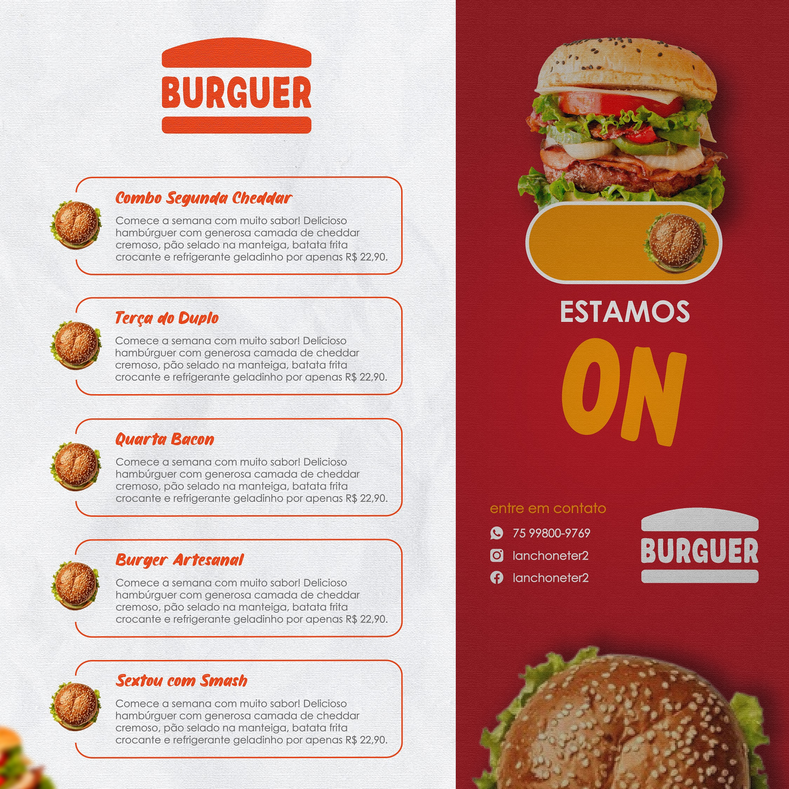

Designer para Lanchonete – Artes Criativas para Destacar seus lanches
Se você quer aumentar as vendas da sua lanchonete, eu posso te ajudar com um flyer profissional e estratégico. Sou designer gráfico e crio artes personalizadas para divulgar seus lanches, combos e promoções de forma visualmente atrativa. Um bom design chama atenção, desperta o interesse do cliente e faz com que sua oferta se destaque em meio à concorrência.

Hoje em dia, a primeira impressão acontece nas redes sociais. Por isso, investir em um flyer bem elaborado é essencial para transmitir profissionalismo e conquistar mais clientes. A arte funciona como uma vitrine digital, organizada e pensada para gerar mais pedidos.
Flyer Profissional para Lanchonetes
Cada lanchonete tem sua identidade, e o design precisa acompanhar isso. Por isso, desenvolvo flyers personalizados, alinhados com o estilo do seu negócio, destacando seus produtos de forma clara e atrativa.
Se você deseja fortalecer ainda mais sua presença visual, também pode conhecer meu serviço de designer gráfico para lanchonete.
Artes para Redes Sociais
Os flyers são criados especialmente para redes sociais como Instagram, Facebook e WhatsApp, garantindo o melhor formato e qualidade para cada plataforma.
Além de chamar atenção, uma arte bem feita facilita a leitura das informações e aumenta o engajamento das publicações. Isso faz com que mais pessoas visualizem suas promoções e aumenta as chances de conversão em vendas.
Destaque para Combos e Promoções
Combos promocionais são uma excelente estratégia para atrair clientes. O flyer pode destacar ofertas como hambúrguer + batata + bebida, promoções do dia ou descontos especiais.
Também é possível organizar vários produtos em um único layout sem perder a clareza. Para manter consistência nas suas postagens, você pode utilizar arte para redes sociais em todas as campanhas.
Flyer Digital e Impresso
Além do uso nas redes sociais, o flyer também pode ser adaptado para impressão. Isso permite divulgar sua lanchonete em panfletos, embalagens ou até dentro dos pedidos delivery.
Outra estratégia eficiente é combinar com cartão de visita profissional, facilitando o contato e fidelizando clientes.
Etapas do Desenvolvimento
1. Envio das informações
Você envia todos os detalhes necessários, como nome dos lanches, preços, combos, bebidas e referências, se tiver.
2. Organização estratégica
Estruturo as informações de forma clara, priorizando o que precisa chamar mais atenção no flyer.
3. Criação do design
Desenvolvo uma arte exclusiva, com foco em impacto visual, cores atrativas e valorização dos produtos.
4. Revisão e entrega
Após sua aprovação, faço os ajustes finais e entrego o material pronto para uso.
Perguntas Frequentes (FAQ)
O flyer é totalmente personalizado?
Sim. Cada arte é criada do zero, de acordo com o estilo da sua lanchonete e suas promoções.
Posso usar o flyer no Instagram?
Sim. Os arquivos são entregues nos formatos ideais para redes sociais.
Dá para incluir vários produtos?
Sim. É possível incluir diferentes lanches e combos mantendo o design organizado e atrativo.
O que preciso enviar?
Envie lanches, preços, combos, bebidas, logotipo e qualquer informação importante para a criação.
Qual o prazo de entrega?
O prazo pode variar conforme a complexidade, mas sempre priorizo agilidade sem perder qualidade.
Um flyer realmente ajuda a vender mais?
Sim. Um design profissional aumenta a visibilidade, melhora o engajamento e influencia diretamente na decisão de compra.
Peça seu Flyer para Lanchonete
Quer destacar sua lanchonete com um design profissional e atrair mais clientes? Entre em contato agora mesmo e solicite seu flyer personalizado.